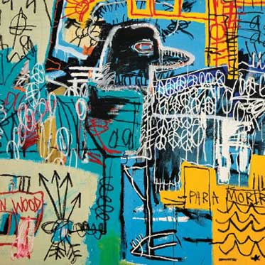
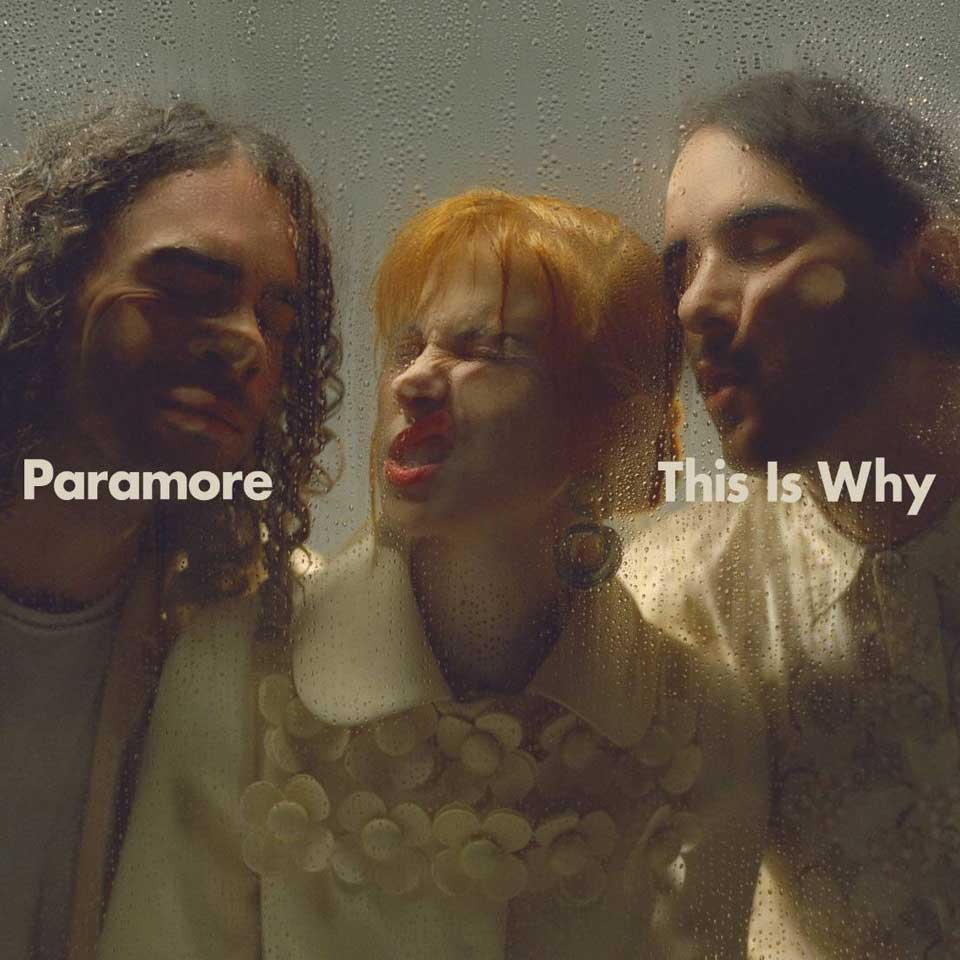
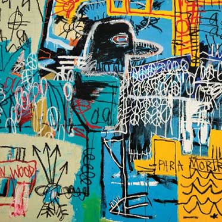
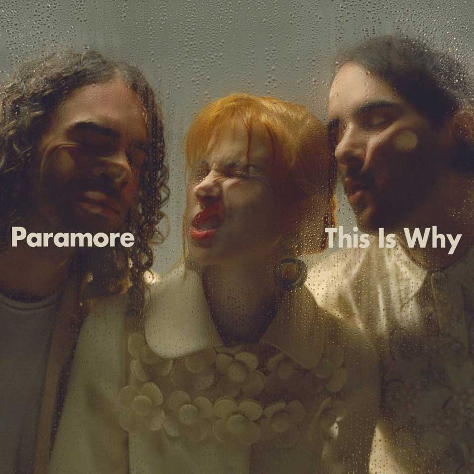

Hola, soy Mauro! Soy Estudiante de la Tecnicatura Universitaria en Programación. Adicionamente, realice cursos de C# donde pude aprender conceptos de POO, .NET y ASP.NET.
Mis objetivos son poder aprender mucho, recibirme y poder conseguir trabajo ya que al incursionarme con esto me di cuenta que me apasiona.
Naci el dia 26 de Enero en Rosario, Santa Fé y viví toda la vida en esta ciudad.
Mi pasatiempos son: Salir a correr, andar en bici, jugar videojuegos y investigar.
Estas son las páginas webs que mas visito:
Con las siguientes sitios web me facilitan el desarrollo de aplicaciones
 


